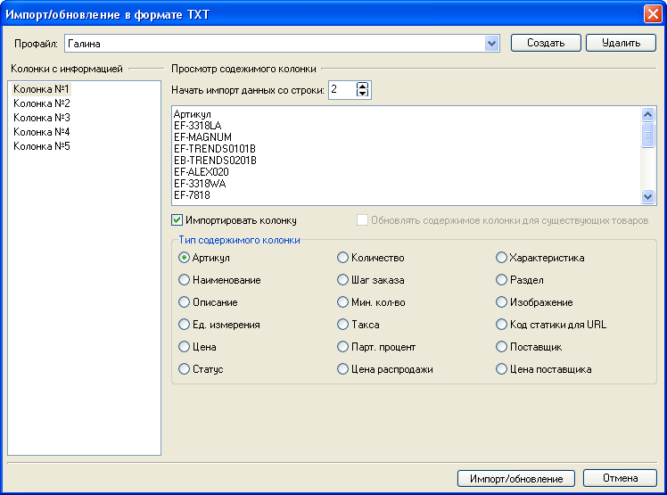
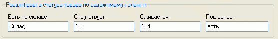
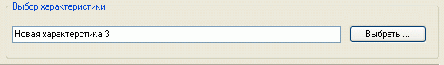
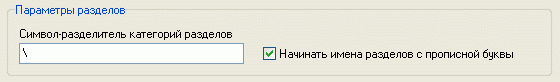
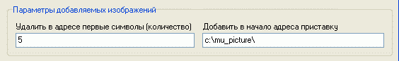
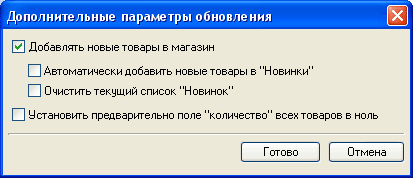
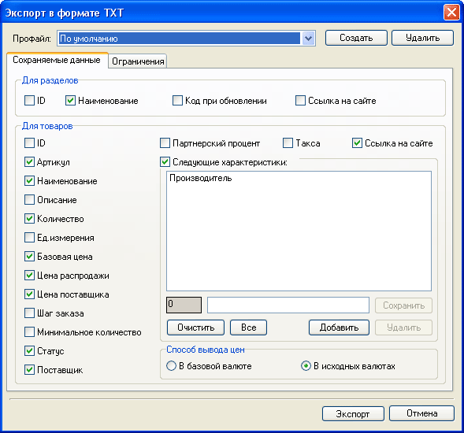
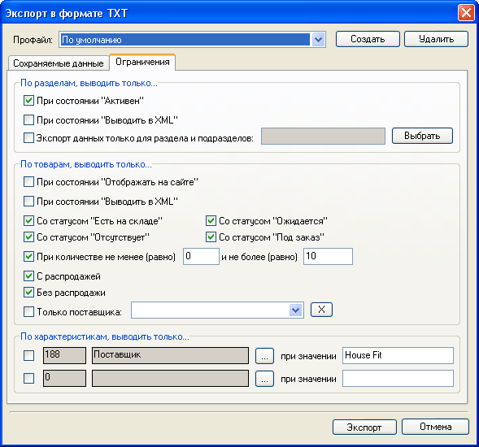

Для внесения начальных сведений о товарах и последующего их обновления можно использовать прайс-лист, подготовленный с помощью других программ. Для этого необходимо сохранить прайс-лист в текстовом формате с разделителем колонок - табуляцией. Это достаточно распространенный формат, поддерживаемый многими программами, в том числе Microsoft Excel и 1C.
Выбором пункта меню "Магазин - Импорт/обновление в формате TXT" вызывается окно "Импорт/обновление в формате TXT"

Если у вас есть разные поставщики товарной базы и импорт товаров происходит достаточно часто, то правила согласования можно сохранить в профайлах. Это позволяет разово согласовать повторяющиеся типы данных и затем использовать эти правила постоянно.
В левой части указанного окна находится перечень колонок в количестве, имеющемся в используемом при импорте текстовом файле, справа вверху - часть позиций этой колонки, а справа снизу - возможные типы данных программы Melbis Shop. Для каждой из колонок необходимо задать, будет ли она импортироваться, и если да - то указать тип находящихся в ней данных. Не следует разным колонкам прайса назначать одинаковый тип содержимого (кроме "Характеристика", которых у каждого товара может быть несколько).
При импортировании(обновлении) полей содержащих цену (цена товара, цена поставщика и т.п.), возможен импорт не только самой суммы, но и валюты. Для этого необходимо чтобы валюта была указана сразу после суммы через пробел, а также наименование этой валюты должно уже присутствовать в справочнике валют магазина.
При наличии колонки типа "Статус" появляются поля для расшифровки статуса товара по содержимому колонки. В них необходимо указать имеющиеся значения колонки, сопоставленные определенным статусам (в данном примере содержимое колонки №8 "Склад" обозначает статус товара "Есть на складе", содержимое колонки №8 "13" обозначает статус товара "Отсутствует" и т.д.):

Для колонки типа "Характеристика" появляется поле для выбора соответствующей характеристики из перечня имеющихся. Возможно также добавление наименования новой характеристики. При импорте набор значений указанной характеристики пополняется значениями из прайс-листа, если таковых значений ранее не имелось:

Для колонки типа "Раздел" указывается символ-разделитель категорий разделов, например: "Посуда\Тарелки\Фарфор". Это позволяет программе автоматически сформировать дерево разделов, а также разместить в нем соответствующие товары. При этом каждый сформированный таким образом раздел получит свой уникальный код (в данном примере раздел "Фарфор", находящийся в разделах "Посуда", "Тарелки", будет иметь код "Посуда\Тарелки\Фарфор"), что позволит однозначно идентифицировать этот раздел при последующем обновлении даже в случае его перемещения и/или переименования. Можно самостоятельно контролировать (редактировать) код раздела в соответствующем поле (см. "Код раздела при обновлении" в "Свойствах разделов" ).

Если в импортируемых данных сведений о разделе не имелось, после нажатия кнопки "Импорт" программа предлагает выбрать раздел, в который будут импортированы данные из прайс-листа. Новые товары рекомендуется импортировать в заранее созданный временный раздел типа "Отдел с товарами" для последующего перемещения импортированных товаров по разделам.
При добавлении изображений возможно удалить в их адресе спереди определенное количество символов (например, полный путь) и (или) добавить приставку (указать полный путь) .

Следует учесть, что при добавлении (импорте) изображений их сформированный адрес записывается как адрес исходного изображения иконки товара для формирователя изображений. После импорта необходимо сформировать иконки товаров на основе добавленных изображений. Осуществляется это в разделе переформатирование иконок, где можно указать, как это делать: оставить изображения такими, как есть, либо сформировать на их основе стилизованные иконки, используя файл с окантовкой.
Поле нажатия кнопки "Импорт/Обновление", предоставляется дополнительный опции, автоматизирующие работу:

Также возможна обратная операция экспорта данных о товарах из программы Melbis Shop в текстовый формат. Выбором пункта меню "Магазин - Экспорт в формате TXT" вызывается окно "Экспорт в формате TXT".

Аналогично импорту данных, здесь также можно создать несколько профайлов, каждый из которых будет определять наиболее частые настройки при экспорте данных из Melbis Shop. В окне присутствует две закладки: "Сохраняемые данные" и "Ограничения". На закладке "Сохраняемые данные" определяются соответственно те данные о товаре, которые должны экспортироваться, а на закладке "Ограничения" задаются условия, по которым будут экспортироваться не все, а только интересующие Вас товары:
